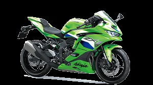

ZX250K-C370
NINJA ZX-25R ABS ZX250K-C370
Kategori: Sport
Rp 135.100.000 OTR*
Harga belum termasuk biaya administrasi, pajak, dan asuransi. Hubungi tim sales kami untuk penawaran resmi dan simulasi kredit.
- Kode MotorZX250K-C370
- KategoriSport
- Unit Tersedia1 unit
- WarnaBIRU
Spesifikasi Teknis
Mesin Liquid-cooled, 4-stroke In-Line Four, 249,8 cc. Tenaga maksimum 35,2 kW {47 PS} / 15.500 rpm (with Ram Air). Torsi maksimum 22,0 Nm {2,2 kgfm} / 12.500 rpm. Berat kosong 180 kg. Kapasitas tangki 15 litres. Tinggi tempat duduk 785 mm. Rem depan Semi-floating ø310 mm disc; rem belakang ø220 mm disc.
Simulasi Kredit
Estimasi kasar — bunga & tenor final ditentukan lembaga pembiayaan (leasing). Bukan penawaran resmi.
Cicilan / bulan—
Total pinjaman—
Estimasi total bayar—